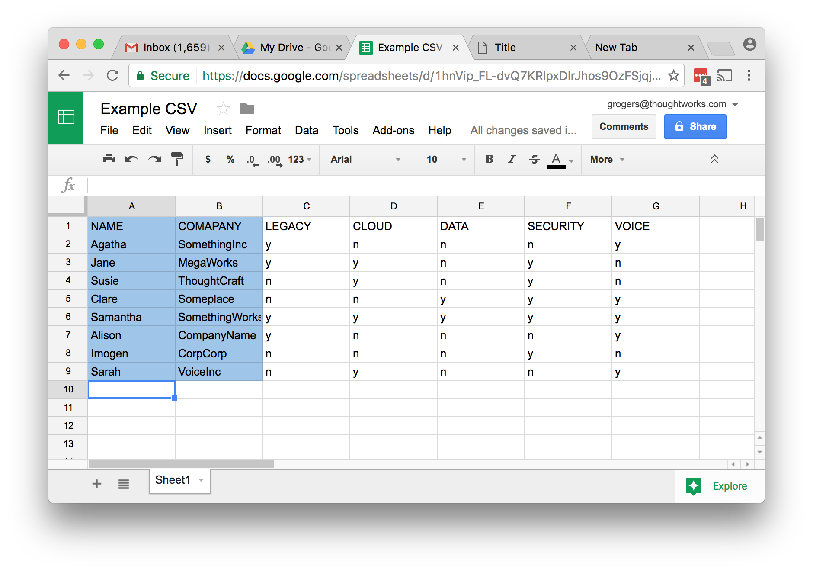

Relationship Visualiser (Alpha)
Drag a CSV file into the box to see a force-directed graph of the relationships between individuals based on shared interestes. See below for more instructions and an example file.
The closer the dots the more common interests the parties have - mouse over to see the names.
File Format
The easiest way to generate data is to create a CSV which looks like this (or you can download and edit the example here):
The first two columns are required, the rest of the columns can be customised to whichever categories you need.
Put a 'y' (for yes) in the cell if the person is interested.
Put a 'n' (for no) in the cell if the person is not interested.
Once your CSV is filled in you can download from google docs (File - Download As - Comma Seperated Values). Once you have your .CSV file, drag it onto the square above.